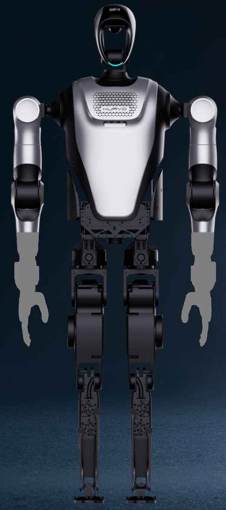

KUAVO 4Pro标准版（22 DoF 本体）
乐聚 · 双足人形 · 已发布
乐聚官方手册所列双足配置，版本参数单独记录。保留行走与跑步的不同口径；场景演示和文档存在不等于已核实订单、交期或客户业务收益。

完整规格与依据
身体规格
- 身高
- 166 cm 已核对原文 · 厂商资料
手册高度由 m 换算为 cm；不引用其他代际的尺寸
本项资料核验 2026-10-24 - 整机重量
- 55 kg 已核对原文 · 厂商资料
手册重量；是否包含电池与不同末端未单列
本项资料核验 2026-10-24 - 自由度
- 22 DoF 已核对原文 · 厂商资料
手册全身自由度，不含末端执行器；不能与包含灵巧手的厂商总数直接比较
本项资料核验 2026-10-24 - 末端执行器
- 待核实
【待继续采集】KUAVO 4Pro 标准版（22 DoF 本体）的末端执行器尚未完成专项深挖。所链仅为产品入口，不是该参数未公开的证明；后续须核对该代手册/配置表或报价，不能从其他代际或零值补齐。
专项核验尚未完成；相关链接不表示厂商从未披露。
运动与操作
- 操作负载
- 待核实
【待继续采集】KUAVO 4Pro 标准版（22 DoF 本体）的操作负载尚未完成专项深挖。所链仅为产品入口，不是该参数未公开的证明；后续须核对该代手册/配置表或报价，不能从其他代际或零值补齐。
专项核验尚未完成；相关链接不表示厂商从未披露。 - 移动速度
- 0.4 m/s 已核对原文 · 厂商资料
手册行走速度；另列跑步 5 km/h，未将跑步速度作为常态行走值
本项资料核验 2026-10-24
电池与工作
- 工作时间
- 1 h 已核对原文 · 厂商资料
手册行走续航；负载、速度及地面条件未完整列明，不包括换电后的累计运行
本项资料核验 2026-10-24 - 电池能量
- 待核实
【待继续采集】KUAVO 4Pro 标准版（22 DoF 本体）的电池能量尚未完成专项深挖。所链仅为产品入口，不是该参数未公开的证明；后续须核对该代手册/配置表或报价，不能从其他代际或零值补齐。
专项核验尚未完成；相关链接不表示厂商从未披露。 - 电池容量
- 6,000 mAh 已核对原文 · 厂商资料
原文 60 V、6 Ah，Ah 换算为 mAh；不跨电压直接比较，也不推算可用 Wh
本项资料核验 2026-10-24
感知与开发
- 感知配置
- Gemini-335L 深度相机；Mid-360 激光雷达；6 麦克风；LB01 关节温度传感器；IMU 已核对原文 · 厂商资料
按对应配置手册记录；型号、数量未列明的器件不补推，不能据传感器配置推断自主能力
本项资料核验 2026-10-24 - 计算平台
- 摩方 i9-13900；Orin NX 已核对原文 · 厂商资料
按对应配置的上下位机记录；可选模块不当作标配
本项资料核验 2026-10-24 - 二次开发
- 待核实
【待继续采集】KUAVO 4Pro 标准版（22 DoF 本体）的二次开发尚未完成专项深挖。所链仅为产品入口，不是该参数未公开的证明；后续须核对该代手册/配置表或报价，不能从其他代际或零值补齐。
专项核验尚未完成；相关链接不表示厂商从未披露。
采购信息
- 美元报价
- 待核实
【待继续采集】KUAVO 4Pro 标准版（22 DoF 本体）的美元报价尚未完成专项深挖。所链仅为产品入口，不是该参数未公开的证明；后续须核对该代手册/配置表或报价，不能从其他代际或零值补齐。
专项核验尚未完成；相关链接不表示厂商从未披露。 - 人民币报价
- 待核实
【待继续采集】KUAVO 4Pro 标准版（22 DoF 本体）的人民币报价尚未完成专项深挖。所链仅为产品入口，不是该参数未公开的证明；后续须核对该代手册/配置表或报价，不能从其他代际或零值补齐。
专项核验尚未完成；相关链接不表示厂商从未披露。
同型号的其他配置 / 代际
- KUAVO 4Pro 展厅版（28 DoF 本体）乐聚 · 双足人形